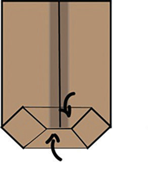
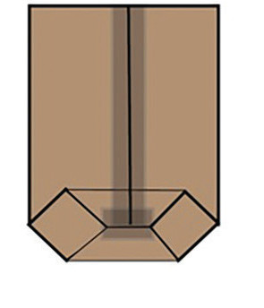

Kielelezo namba 12: Namna ya kukunja mfuko wa karatasi mtindo wa pembetatu
6. Kunja kila upande kuelekea katikati ukipishanisha pande hizo kwa sentimita 1 na uweke gundi.


Kielelezo namba 13: Namna ya kudhibiti upande wa chini wa mfuko wa karatasi